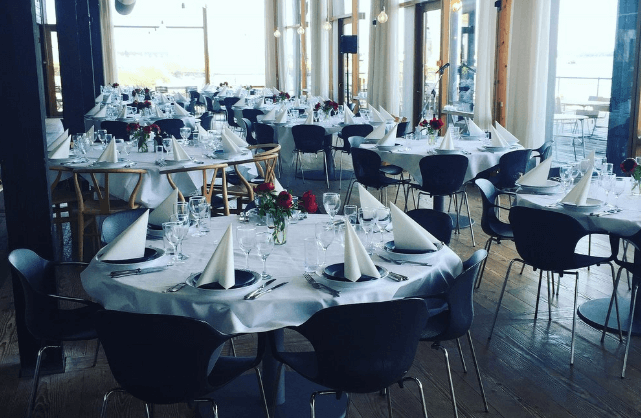
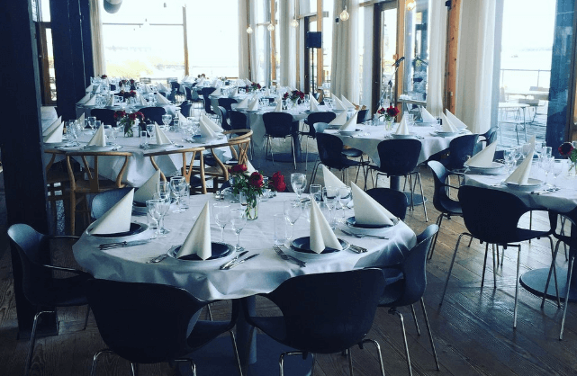

Nu kan du opleve særudstillingen, skabt i samarbejde mellem Danmarks Marineforening, Orlogsmuseets Modelbyggerlaug og Fregatten Jylland.
Udstillingen består af et hav af unikke modelskibe med hver deres eventyrlige fortælling.
Børn (0-3 år) - Gratis
Børn (4-17 år) kr. 85
Voksne - kr. 135
Senior +65 - kr. 110
Kanonen er ladt, skibets hemmeligheder er fundet frem og nøglerne til kisten er gemt. Træk i matrostøjet, som du finder ved entréen, og forbered dig på en dag fyldt med spænding, indlevelse og sjov!
Fregattens guider fortæller levende om “Jylland” som kongeskib, og endnu mere levende om fregattens indsats under træfningen ved Helgoland den 9. maj 1864.
Børn og voksne kan også prøve kræfter med livet ombord. Ta’ en lur i køjerne, lav dit eget reb, kravl op i masten, lad kanonen og oplev, hvor højt det lyder, når kanonen fyres af.
Det gamle skib med den høje rigning og kanonlugerne leder tankerne hen på de mange historier fra tider, hvor pirater lurede på verdenshavene. I nærheden af det gamle skib ligger hele Kalle Krudts skat gemt. Måske er du den, som kan finde Kalles gamle skat?
Søfartsbogen tager dig på en rejse, hvor du kan læse dig til en masse spændende viden om livet på sømand. Undervejs i fortællingen dukker en række spørgsmål og quiz op, som tester din viden og forståelse. Bogen tager dig med på en tur rundt på skibet, men du kan også tage bogen med hjem og læse den som spændende godnatlæsning.
Ombord på Fregatten Jylland finder du Kaptajn Kalle Krudts Dødesmandskiste, men den gamle kaptajn har beskyttet sin skattekiste med seks svære hængelåse.
Kom og hjælp os med at finde seks nøgler. Som tak for din hjælp får du også del i skatten.
BUTIK
BUTIK
I forbindelse med Fregatmuseets reception finder du en butik, hvor den maritime arv er i højsædet. Her finder du modeller af fregatten, litteratur om skibet og søfartshistorien samt et udvalg af øl og spiritus, der relaterer sig til fregattens virke og samtid.
Der er naturligvis også mulighed for at købe is og andre forfriskninger.
 

MAD OG DRIKKE
Karens køkken er en restaurant, der ligger med Ebeltofts bedste udsigt, direkte ved Fregatten Jylland. Her kan du i smukke omgivelser nyde en brunch, frokost, middag eller bare en kop friskbrygget kaffe.
Her får du mad tilberedt med kærlighed til de nøje udvalgte råvarer. Køkkenet er primært inspireret af den franske og italienske madkunst.